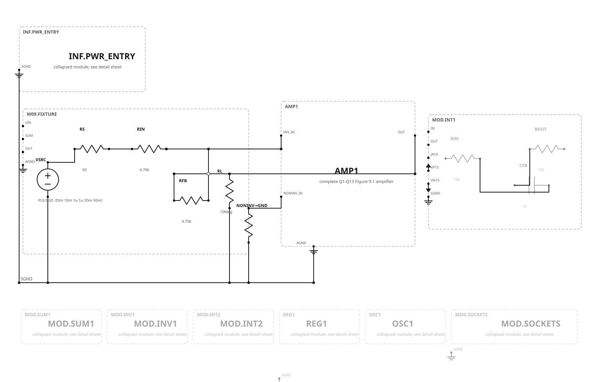
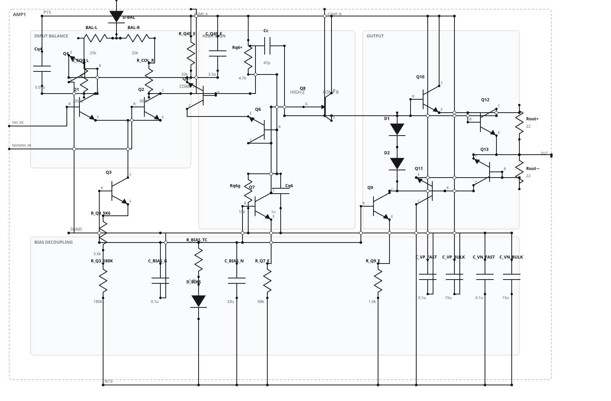
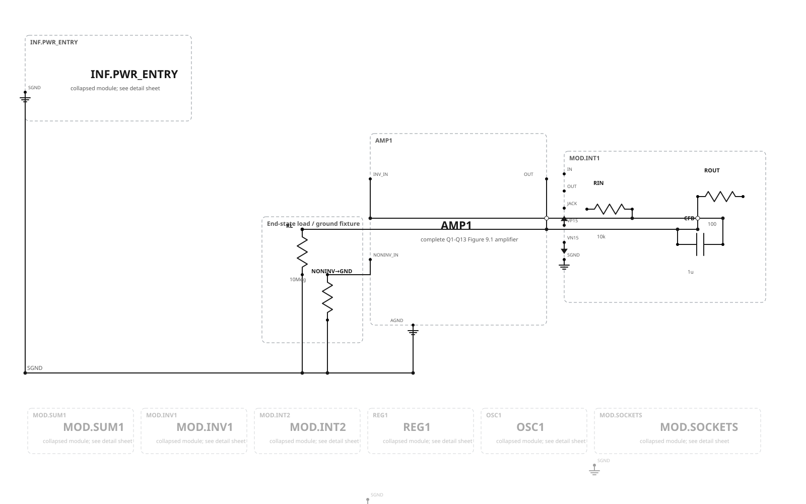

Week 9 · Complete Q1–Q13 amplifier
The two limiter transistors sense the 22 Ω output-emitter resistors and constrain output current. The complete detail below is the source-adjudicated Figure 9.1 topology, with package pin maps and realistic model provenance still explicitly unresolved.

| Case | Cc socket | α | Input regime | Purpose |
|---|---|---|---|---|
| A47 | 47 pF | 1/2 | −20 mV small step | Conservative baseline and retained provisional end state |
| A33 | 33 pF | 1/2 | −20 mV small step | Reduced phase-margin comparison |
| A10 | 10 pF | 1/2 | −20 mV small step | Fast small-signal response |
| A05 | 5 pF | 1/2 | −20 mV small step | Most aggressive small-signal case |
| B20 | 20 pF | 1/2 | 20 Vpp large signal | Slew-rate comparison |
| B10 | 10 pF | 1/4; 2.350 kΩ shunt | 20 Vpp large signal | Higher noise-gain large-signal case |


Gate status
Topology/connectivity acceptance and electrical-performance acceptance are intentionally separate decisions.
| Check | Observed | Required | Status |
|---|---|---|---|
| Canonical graph validation and matched SVG/SPICE connectivity | All three main and all three detail projections agree | No pin/net mismatch | PASS |
| Balance output | 5.22185024 V | ≤ 0.1 V | FAIL |
| 1 Hz inverter magnitude | 0.0349075907 | 0.9–1.1 | FAIL |
| Integrator result | +0.08338962 V | −0.2 V ±10% | FAIL |
| Realistic device tier | Lawful exact model bindings incomplete | Provenance, hashes, pin maps, characterization | BLOCKED |
Review decision
Approval accepts the chronological Week 8 → Week 9 topology, the Q12/Q13 permanent delta, the three schematic configurations, and the presentation. It does not approve electrical Gate 2 and does not insert anything into the capstone.
Next after topology approval: diagnose the failed Week 9 electrical proof, rerun it against this reconciled graph, and only then proceed to the Week 10 current-mirror modification.
Canonical authority: reconciled Week 9 graph. Cases: manifest. Decision: reconciliation record. Earlier evidence: Gate 2 status. Deferred projects remain unchanged: physical patch-cord drawings, permanent infrastructure sheets, and the separate low-voltage modern redesign.